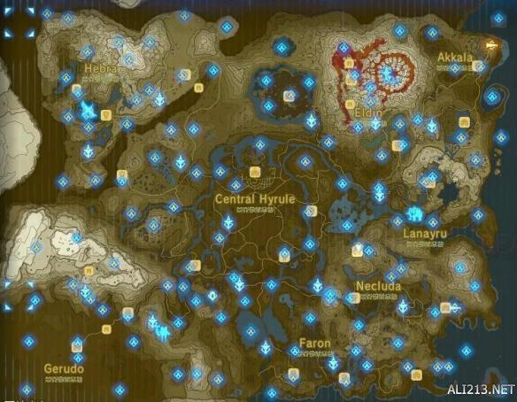
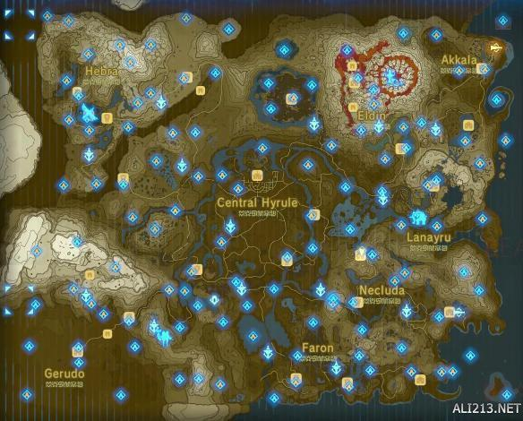

塞尔达传说荒野之息神庙位置在哪里?一些玩家找的不是很全，下面就给大家带来塞尔达传说荒野之息全神庙位置地图详解，还没找齐的玩家们一起来看下吧。
全神庙位置地图详解


几个小窍门：
1、用绿色蘑菇做菜可以补充体力，攀爬时很有用。地图东南侧海中孤岛的神庙奖励爬山加速的衣服。(有一个十分强力的守护者要解决)
2、守护者零件最好别卖掉，第一间实验室可以用守护者零件升级林克的特殊技能。
3、第二间实验室位于地图最东北角，需要你先脱光衣服验明正身触发点火的剧情。点火成功以后可以用守护者的零件换各种专门克制守护者的武器和防具。
4、守护者的四肢都可以打断，另外还能用锁死技能锁住一段时间。